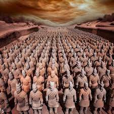

Yellowstone


Geographical Location: North America
Yellowstone is the first national park in the United States. It covers over 2.2 million acres, and provides an opportunity to see wildlife and explore geothermal areas. In fact, Yellowstone contains about half the world's active geysers.
These unique opportunities also bring out a lot of bad decisions among the tourists. Every year visitors injure themselves or the wildlife by getting close to the animals. You can see examples of people making bad decisions by visiting Yellowstone National Park: Invasion of the Idiots, Tourons of Yellowstone, or Cowboy State Daily.
Photo Gallery


Great Wall of China
Geographical Location: Beijing, China
he Great Wall of China is broken up into different sections as opposed to being a continuous landmark. Each section holds its own merit to varying degrees of restoration and surrounding scenery.
While many of the 'untouched' sections may seem more appealing and authentic, they’re actually very dangerous. If you want to traverse these remote sections of the wall, it’s best to sign up to a specialist hiking tour. The Great Wall, Tourism of The Great Wall
Photo Gallery
The Eiffel Tower
Geographical Location: Paris
The Eiffel Tower is a wrought-iron lattice tower on the Champ de Mars in Paris, France. Constructed from 1887, it is named after the engineer Gustave Eiffel, whose company designed and built the tower.
Locally nicknamed "La dame de fer" (French for "Iron Lady"), it was constructed from 1887 to 1889 as the centerpiece of the 1889 World's Fair. The Eiffel Tower
Photo Gallery
The Terracotta Army
Geographical Location: Xi An, China
The Terracotta Army is a collection of terracotta sculptures depicting the armies of Qin Shi Huang, the first emperor of China. It is a form of funerary art buried with the emperor in 210–209 BCE with the purpose of protecting him in his afterlife.
The figures, dating from approximately the late 200s BCE,[1] were discovered in 1974 by local farmers in Lintong County, outside Xi'an, Shaanxi, China. The Terracotta Army
Photo Gallery